1과목: 대기오염 개론
1. 역전에 관한 설명으로 가장 거리가 먼 것은?
2. Pasquill은 확산 추정시 변동 측정법을 추전하였으며, 광범위한 추정에 필요한 기상자료를 이용하여 확산의 계획안을 제출하였는데, 이 때 필요한 변수와 가장 거리가 먼 것은?
3. 열기배출 형태 중 원추형(coning)에 관한 설명으로 가장 적합한 것은?
4. 유효굴뚝높이 200m인 연돌에서 배출되는 가스량은 20m3/sec, SO2농도는 1750ppm 이다. ky=0.07, kz=0.09인 중립 대기조건에서의 SO2의 최대 지표농도(ppb)는? ( 단, 풍속은 30m/s이다.)
5. Richardson 수(R)에 관한 설명으로 옳지 않은 것은?
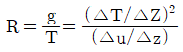
로 표시하며, △T/△Z는 강제대류의 크기, △u/△z는 자유대류의 크기를 나타낸다.6. 대기오염물질의 분류 중 1차 오염물질이라 볼 수 없는 것은?
7. 실내공기오염물질 중 석명의 위험성을 점점 커지고 있다. 다음 설명하는 석면의 분류에 해당 하는 것은?
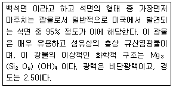
8. 빛의 소멸계수(Oext) 0.45km-1인 대기에서, 시정거리의 한계를 빛의 강도가 초기 강도가 초기 강도가 초기 강도의 95%가 감소했을 때의 거리라고 정의할 때, 이 때 시정거리 한계는? (단, 광도는 Lambert-Beer 법칙을 따르며, 자연대수로 적용)
9. 다음 물질의 특성에 대한 설명중 옳은 것은?
10. 다음 오염물질과 주요 배출관련 업종의 연결로 가장 거리가 먼 것은?
11. 다음 특정물징 중 오존파괴지수가 가장 낮은 것은?
12. 지상의 점오염원 (He=0)으로부터 바람부는 방향으로 400m 떨어진 연기의 중신선상에서의 지상 (z=0) 오염농도는? (단, 오염물질 배출량은 10g/s, 풍속은 5m/s, Oy와Oz는 각각 22.5m와 12m이고, 농도계산식은 가우시안 모델을 적용)
13. 역사적 대기오염사건에 관한 설명으로 옳은 것은?
14. 다음은 탄화수소류에 관한 설명이다. ( )안에 가장 적합한 물질은
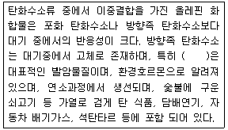
15. 최대혼합 고도를 500m로 예상하여 오염농도를 3ppm으로 수정하였는데, 실제관측된 최대 혼합고는 200m였다. 실제 나타날 오염농도는?
16. 도시 대기오염물질 중에서 태양빛을 흡수하는 아주 중요한 기체 중의 하나로서 파장 0.42mm 이상의 가시광선에 의해 광분해 되는 물질로서 대기 중 체류시간은 2~5일 정도인 것은?
17. 표준상태에서 SO2 농도가 1.28g/m3이라면 몇 ppm 인가?
18. 식물의 잎에 회백색 반점, 잎맥 사이의 표백, 백화 현상을 일으키며, 쥐당나무, 까치밤나무등은 강한 편이고, 지표식물로는 보리, 담배 등인 대기오염물질은?
19. 다음 중 불화수소(HF)의 주료 배출관련 업종으로 가장 적합한 것은?
20. 다음 설명하는 대기분산모델로 가장 적합한 것은?
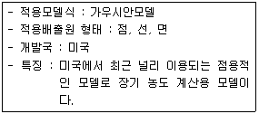
2과목: 연소공학
21. 다음 기체연료의 일반적인 특징으로 가장 거리가 먼 것은?
22. 화염으로부터 열을 받으면 가연성 증기가 발생하는 연로로써, 휘발유, 등유, 알콜, 벤젠 등의 액체연료의 연소형태는?
23. 액체연료의 연소장치인 유압분무식 버너에 관한 설명으로 가장 거리가 먼 것은?
24. 어떤 2차반응에서 반응물질을 농도를 같게 했을 때 그 10%가 반응하는데 250초 걸렸다면 90% 반응하는데 데는 몇초 걸리는가?
25. 중유 1kg 속에 H13%, 수분 0.7%가 포함되어 있다. 이 중유의 고위발열량이 5000kcal/kg 일 때 이 중유의 저위발열량 (kcal/kg)은?
26. 유황 함유량이 1.6%(W/W)인 중유를 매시 100통 연소시킬 때 굴뚝으로 부터의 SO3배출량 (Sm/h)은? (단, 유황은 전량이 반응하고 이 중 5%는 SO3로서 배출되며 나머지는 SO2로 배출된다)
27. 기체연료의 연소방식 중 예혼합연소에 관한 설명으로 옳지 않은 것은?
28. 미분탄 연소장치에 관한 설명으로 옳지 않은 것은?
29. 연소반응에서 가연성물질을 산화시키는 물질로 가장 거리가 먼 것은?
30. 화격자 연소 중 상부투입 연소에서 일반적인 구성순서로 가장 적합한 것은? (단, 상부 → 하부)
31. H2 50%, CH4 25%, CO2 18%, O2 7%로 조성된 기체연료를 이론공기량으로 완전연소 시켰다. 습배출가스 중 CO2의 농도(%)는?
32. 다음 각종 가스의 완전연소 시 단위부피당 이론공기량 (Sm3/Sm3)이 가장 큰 가스는?
33. 유류버너 중 회전식 버너에 관한 설명으로 옳지 않은 것은?
34. 고체연료에 관한 설명으로 옳지 않은 것은?
35. 모닥불이나 화재 등도 이연소의 일종이며, 고정된 연료괴의 층을 연소용 공기가 통과하면서 연소가 일어나는 것으로 금속격자 위에 연료를 깔고 아래에서 공기를 불어 연소시키는 형태는?
36. 확산형 가스버너인 포트형 설계시 주의사항으로 옳지 않은 것은?
37. 폐타이어를 연료화하는 주된 방식과 가장 거리가 먼 것은?
38. 연료의 표면적을 넓게 하여 연소방응이 원활하게 이루어 지도록 하는 연소형태와 가장 거리가 먼 것 은?
39. 오산화이질소 (N2O5)의 분해는 아래와 같이 45˚C에서 속도상수 5.1×10-4s-1인 1차반응 이다. N2O5의 농도가 0.25M에서 0.15M으로 감소되는 데는 약 얼마의 시간이 걸리는가?
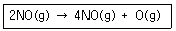
40. 액체연료의 석유의 물성치에 관한 설명으로 옳지 않은 것은?
3과목: 대기오염 방지기술
41. 온도 20˚C 압력 120kPa의 오염공기가 내경 400mm의 관로내를 질량유속 1.2kg/s로 흐를 때 관내의 유체의 평균유속은? (단, 오염공기의 평균분자량은 29.96이고 이상기체로 취급한다. 1atm = 1.013 × 105 Pa)
42. 휘발유 자동차의 배출가스를 감소하기 위해 적용되는 삼원측매 장치의 촉매물질 중 환원 촉매로 사용되고 있는 물질은?
43. 악취물질의 성질과 발생원에 관한 설명으로 가장 거리가 먼 것은?
44. 광학현미경을 이용하여 입경을 측정하는 방법에서 입자의 투영면적을 이용하여 측정한 입경 중 입자의 투영면적 가장자리에 접하는 가장 긴 선의 길이로 나타내는 것은?
45. 전기집진장치의 특성으로 가장 거리가 먼 것은?
46. 침강실의 길이 5m인 중력집진장치를 사용하여 침강집진할 수 있는 먼지의 최소입경이 140㎛였다. 이 길이를 2.5배로 변경할 경우 침강실에서 집진가능한 먼지의 최소 입경(㎛) 은? (단, 배출가스의 흐름은 층류이고, 길이 이외의 모든 설계조건은 동일하다)
47. 다음은 충전탑에 관한 설명이다. ( )안에 가장 적합한 것은?
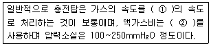
48. 벤츄리 스크러버에 관한 설명으로 가장 적합한 것은?
49. 벤젠 소각 시 속도상수 k가 540˚C에서 0.00011/s, 640˚C에서 0.14/s 일 때, 벤젠 소각에 필요한 활성화 에너지(kcal/mol)는? (단, 벤젠의 연소반응은 1차 반응이라 가정하고, 속도상수 k는 다음 Arrhenius 식으로 표현 된다. k = Aexp(-E/RT) )
50. 다음 중 활성탄으로 흡착 시 가장 효과가 적은 것은?
51. 높이 2.5m, 폭 4.0m인 중력식 집진장치의 침강실에 바닥을 포함하며 20개의 평행판을 설치하였다. 이 침강실에 점도가 2.078×10-5kg/m·sec인 먼지가스를 2.0m3/sec 유량으로 유입시킬 때 밀도가 1200kg/m3이고, 입경이 40㎛인 먼지입자를 완전히 처리하는데 필요한 침강실의 길이는? (단, 침강실의 흐름은 층류)
52. 여과집진장치의 특성으로 옳지 않은 것은?
53. 사이클론의 원추부 높이가 1.4m 유입구 높이가 15cm, 원통부 높이가 1.4m 일 때 외부선 회류의 회전수는? (단, N=(1/HA)[HB+(HC/2)
54. A집진장치의 입구와 출구에서 함진가스 중 먼지의 농도를 측정하였더니 각가 15g/Sm3, 0.3g/Sm3이었고, 또 입구와 출구에서 측정한 분진시료 중 0~5의 중량백분율이 각각 10%, 60%이었다면 이 집진장치의 0~5㎛입경범위의 먼지에 대한 부분집진율(%)은?
55. 배출가스 중의 염화수소(HCI)의 농도가 150ppm이고 배출허용기준이 40mg/Sm3이라면, 이 배출허용기분지로유지하기 위하여 제거해야 할 HCI은 현재 값의 약 몇%인가? (단, 표준상태기준)
56. 원심력 집진장치의 성능인자에 관한 설명으로 가장 거리가 먼 것은?
57. 배출가스 중 NO 발생을 저감시킬 수 있는 방법으로 거리가 먼 것은?
58. 여과집진장치의 탈진방식 중 간헐식에 관한 설명으로 옳지 않은 것은?
59. 환기장치의 요소로서 덕트 내의 동압에 관한 설명으로 옳은 것은?
60. 유해가스 종류별 처리제 및 그 생성물과의 연결로 옳지 않은 것은? (순서대로 유해가스, 처리제, 생성물)
4과목: 대기오염 공정시험기준(방법)
61. 흡광차분광법에서 분석기 내부의 구성장치와 가장 거리가 먼 것은?
62. 연료의 연소로부터 배출되는 굴뚝 배출가스 중 일산화탄소를 정전위전해법으로 분석하고자 할 때 주요 성능기준으로 옳지 않은 것은?
63. 환경대기 내의 탄화수소 측정방법 중 총탄화수소 측정법 성능기준으로 옳지 않은 것은?
64. 원자흡광광도법에서 목적원소에 의한 흡광도 As와 표준원소에 의한 흡광도 AR와의 비를 구하고 As/AR값과 표준물질 농도와의 관계를 그래프에 작성하여 검량선을 만들어 시료 중의 목적원소 농도를 구하는 정량법은?
65. 다음은 비분산 적외선 분석방법 중 응답시간의 성능기준을 나타낸 것이다. ( )안에 알맞은것은?
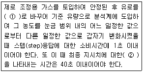
66. 환경대기 내의 석면 시험방법 중 시료 채위 장치 및 기구에 관한 설명으로 옳지 않은 것은?
67. 환경대기 중의 일산화탄소 측정방법 중 수소영 이온화 검출기법은 시료공기를 몰리큘러 시브(Molecular Sieve)가 채워진 분리관을 통과시켜 분리된 일산화탄소를 메탄으로 환원하여 수소영 이온화 검출기로 정량하는 방법이다. 이때 사용되는 운반가스와 촉매로 가장 적합한 것은?
68. 환경대기 중 옥시단트(오존으로서) 측정밥법 중 화학발광 법(자동연속측정법)에 관한 설명으로 옳지 않은 것은?
69. 배출가스 중 카드뮴 화합물의 농도를 측정하기 위하여 채취한 시료가 다량의 유기물 유리탄소를 함유하고 있었다. 이 시료의 처리방법으로 가장 적합한 것은?
70. 분석대상가스가 암모니아인 경우 사용가능한 채취관의 재질로 가장 거리가 먼 것은?
71. 가스크로마토그래프의 장치구성에 관한 설명으로 가장 거리가 먼 것은?
72. 기체-액체 크로마토그래프법에 사용되는 고정상액체(Stationary Liquid)의 조건으로 옳은 것은?
73. 환경대기 중 가스상 물질의 시료채취방법에서 채취관-여과재-포집부-흡인펌프-유량계(가스미터)의 순으로 시료를 채취하는 방법은?
74. 다음 중 대이고염 공정시험기준상 지하공간 및 환경대기 중의 벤조(a)피렌 농도를 측정하기 위한 시험방법으로 가장 적합한 것은?
75. 흡광광도 분석장치인 광전분광 광도계에서 발생하는 희미하고 약한 불빛인 미광(Stray Light)의 파장역으로 거리가 먼 것은?
76. 굴뚝 배출가스 중의 수분량 측정을 위해 흡습관에 배출가스를 10L 통과시킨 결과 흡습관의 중량증가는 0.7510g 이었다. 이 때 건식가스미터로 측정하여보니, 게이압이 4mmH2O 이고, 흡인가스 온도가 27˚C였다. 측정당시 대기압이 757mmHg이면 배출가스중의 수분량 (%)은?
77. 대기환경중에 존재하는 휘발성유기화화물(VOCs) 중 오전생성 전구물질과 유해대기오염물질의 농도를 측정하기 위한 시험방법에 해당하지 않은 것은?(관련 규정 개정전 문제로 여기서는 기존 정답인 3번을 누르면 정답 처리됩니다. 자세한 내용은 해설을 참고하세요.)
78. 원자흡광광도법에서 사용하는 용어 설명으로 거리가 먼 것은?
79. 다음 중 굴뚝 배출가스 중의 질소산화물을 정량하는 방법은?
80. 다음 중 디에틸아민동 용액에서 시료가스를 흡수시켜 생성된 디에틸 디티모카바민산동의 흡광도를 435nm의 파장에서 측정하는 항목은?
5과목: 대기환경관계법규
81. 대기환경보전법령상 시·도지사가 사업자로 하여금 측정기기 운영·관리기준을 지키지아니 하여 조치명령을 하는 경우에 정하는 개선기간의 최대범위는? (단, 연장기간 제외)
82. 대기환경보전법규상 정밀검사대상 자동차 및 정밀검사 유효기간 기준의 차령 4년 경과된 “비사업용 승용자동차”의 정밀검사 유효기간은? (단 해당자동차는 자동차관리법에 따른다.)
83. 다중이용시설 등의 실내공기질 관리법규상 보육시설 내부의 쾌적한 공기질을 유지하기 위한 실내공기질 유지기준이 설정된 오염물질이 아닌 것은?
84. 대기환경보전법령상 기본부과금의 지역별부과계수로 옳게 연결된 것은?(단, 지역구분은 「국토의 계획 및 이용에 관한 법률」에 따르고 대표적으로 Ⅰ지역은 주거지역, Ⅱ지역은 공업지역, Ⅲ지역은 녹지지역이 해당한다.)
85. 대기환경보전법규상 위임업무의 보고횟수 기준이 “수시”에 해당되는 업무내용은?
86. 다음은 환경정책기본법상 용어의 뜻 이다. ( )안에 알맞은 것은?
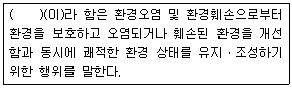
87. 대기환경보전법규상 배출시설별 대기오염물질 발생량 산정방법이 있어 계산항목에 해당하지 않는 것은?
88. 대기환경보전법령상 초과부과금 산정기준 중 오염물질과 그 오염물질 1kg당 부과금액(원)의 연결로 모두 옳은 것은?
89. 대기환경보전 법규상 자동차 종류 구분기준 중 전기만을 동력으로 사용하는 자동차로서 1회 충전 주행거리가 80km이상 160km미만에 해당하는 것은?
90. 대기환경보전법규상 휘발유 이륜자동차의 배출가스 보증기간 적용기준으로 옳은 것은?(관련 규정 개정전 문제로 여기서는 기존 정답인 2번을 누르면 정답 처리됩니다. 자세한 내용은 해설을 참고하세요.)
91. 다음은 악취방지법규상 악취검사기관의 준수사항이다. ( )안에 알맞은 것은?
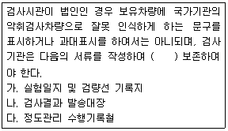
92. 대기환경보전법령상 황함유기준에 부적합한 유류를 판매하여 그 해당 유류의 회수처리명령을 받은 자는 시·도지사 등에게 그 명령을 받은 날부터 며칠 이내에 이행완료보고서를 제출 하여야 하는가?
93. 대기환경보전법상 시·도지사가 사업자에게 대기오염물질 배출허용기준 초과 등에 따른 배출 부과금 부과시 반드시 고려해야 할 사항으로 가장 거리가 먼 것은?(단, 그 밖의 사항 등은 고려하지 않음)
94. 대기환경보전법령상 “자동차 사용의 제한 명령 및 사업장의 연료사용량 감축 권고” 등의 조치사항에 해당하는 대기오염 경보단계는?
95. 다음은 대기환경보전볍규상 첨가제ㆍ촉매제 제조기준에 맞는 제품의 표시방법이다. ( )안에 알맞은 것은?
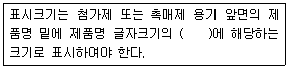
96. 대기환경보전법령상 3종 사업장의 환경기술인의 자격기준에 해당되는 자는?
97. 대기환경보전법상 배출시설을 가동할 때에 방지시설을 가동하지 아니하거나 오염도를 낮추기 위하여 배출시설에서 나오는 오염물질에 공기를 섞어 배출하는 행위를 한 자에 대한 벌칙 기준은?
98. 다음은 대기환경보전법상 환경기술인에 관한 사항이다. ( )안에 알맞은 것은?
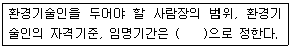
99. 대기환경보전법에서 사용하는 용어의 뜻으로 옳지 않은 것은?
100. 대기환경보전법상 대기환경규제지역을 관할하는 시·도지사 등은 그 지역이 대기환경규제지역으로 지정·고시된 후 몇 년 이내에 그 지역의 환경기준을 달성·유지하기 위한 계획을 수립·시행하여야 하는가?